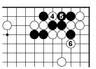
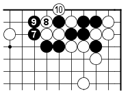
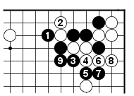

The most promising continuation seems to be one that creates a double-threat. After 1 and 3 in Dia 2, Black makes miai starting a ladder with A (which is favorable for him in this game), and capturing two White stones with B.
There are two sides though in each Go game. Ignoring the opponent's possibilities usually result in a loss. Let's think from the White's perspective as well: White to play in Dia 2 - do your best.
White has a tesuji up his sleeve, too: the forcing move 4 which is atari (Black has to connect at 5) takes care of the B threat in Dia 2, so White can go ahead next and eliminate the A threat in Dia 2 by capturing with 6 in Dia 3.
Dia. 3
Dia 4 shows why 4 in Dia 3 works for White: Black 7 cannot capture the two White stones anymore: White wins the semeai in the corner next.
Dia. 4
Back to Dia 1: Black tried his best to look up at the most aggressive continuation, which was Dia 2, but found out that White has the tesuji in Dia 3 to the rescue, so Black has to settle for something more peaceful. In a close fight, when we cannot save all of our stones, we have to think about sacrifice.
Black has to sacrifice three stones: Dia 5 shows the continuation in the real game.
Dia. 5
Even if Dia 2 doesn't work for Black in this case, it is definitely worthwhile understanding the idea behind it: you'll find a situation when it does work!
The second tesuji worth remembering is White 4 in Dia 3. Both tesuji from Dia 2 and Dia 3 can occur in close fights, in a lot of different positions: make sure you remember them.